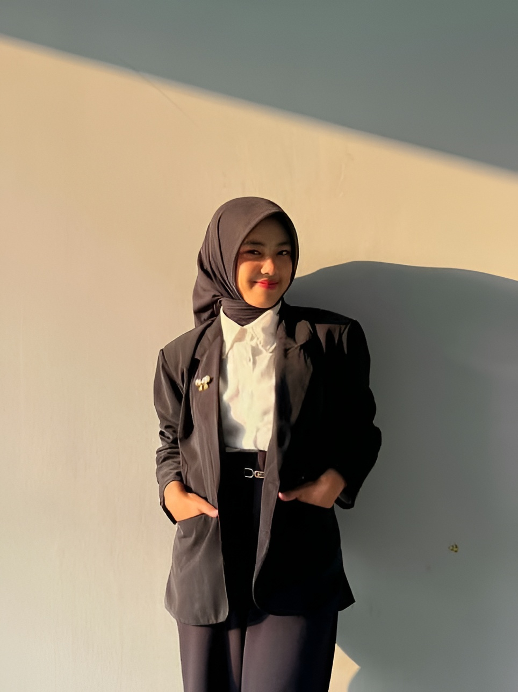
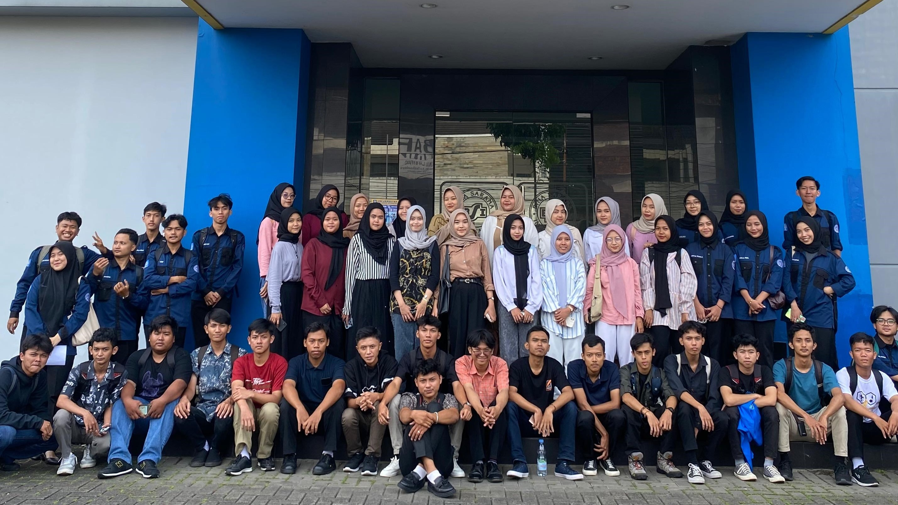
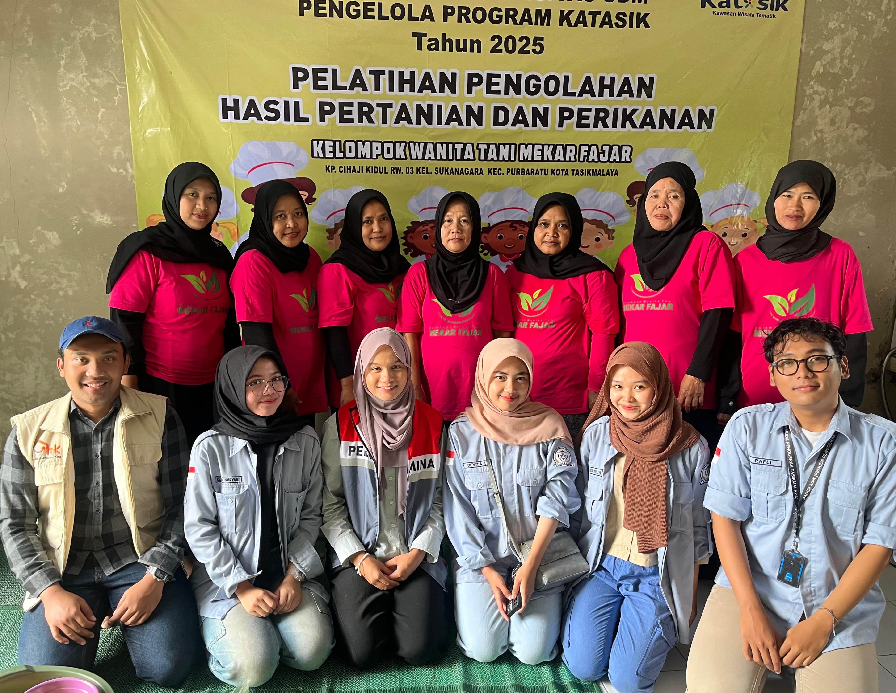
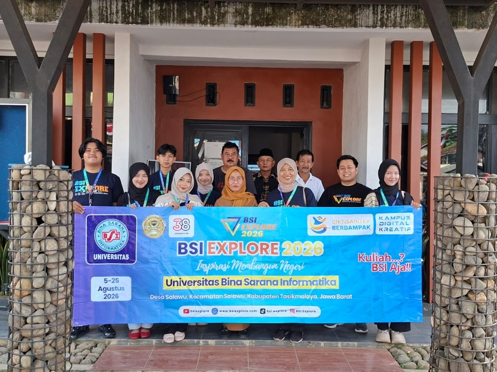

2024 — Present
Universitas Bina Sarana Informatika
Information Systems
PSDKU Kota Tasikmalaya
Reported GPA: 4.00
( INFORMATION SYSTEMS STUDENT · PERSONAL PORTFOLIO )
Hello, I'm Devita Izhal Shafira — a fifth-semester Information Systems student focused on Data Analytics and Web Development, with an interest in database management and Data Engineering.
Personal dossier

Devita Izhal Shafira
Curious mind · Creative learner
INDONESIA
DS
EST. 2024
01 / A LITTLE INTRODUCTION
“Always curious, always learning, always building.”
Hello! I'm Devita Izhal Shafira, a fifth-semester Information Systems student at Universitas Bina Sarana Informatika, PSDKU Tasikmalaya.
I have a strong interest in Data Analytics and Web Development. Through coursework, personal projects, and practical experiences, I have explored data processing, SQL, Python, relational databases, and web application development.
My project experience includes analyzing e-commerce datasets, developing a web-based order management application, building a simple Python cashier application, and experimenting with computer vision. I have also participated in student organizations and educational volunteer activities.
I enjoy learning through hands-on practice, collaborating with others, and turning ideas into practical digital solutions. I am continuously improving my technical and professional skills while exploring opportunities in the technology field.
05
Current Semester
06+
Project Highlights
2024
University Since
Project count reflects the selected works currently displayed in this portfolio.
02 / LEARNING JOURNEY
2024 — Present
Information Systems
PSDKU Kota Tasikmalaya
2022 — 2024
Senior High School
General secondary education.
03 / MY TOOLKIT
A collection of tools and concepts I have learned or practiced through coursework and personal projects.
04 / WHERE I HAVE GROWN
INTERNSHIP / PRACTICAL WORK
Praktik Kerja Lapangan · 3 months

Contributed to the development of AA Kadu Rekap Order, a web application designed to support order recording and transaction management.
CERTIFICATION

DABI Camp · Celerates
Data analytics training and certification program covering data processing, analysis, and visualization fundamentals.
05 / COMMUNITY & INVOLVEMENT
Experiences in student organizations and community activities.

STUDENT ORGANIZATION
Member · 2025–2026
Berpartisipasi sebagai anggota Himpunan Mahasiswa Sistem Informasi dalam lingkungan organisasi mahasiswa program studi.

COMMUNITY VOLUNTEERING
Community Volunteer · 2025–2026
Terlibat sebagai volunteer dalam kegiatan komunitas serta mendukung pelaksanaan kegiatan bersama anggota dan relawan lainnya.

EDUCATIONAL VOLUNTEERING
Volunteer · 5–27 August 2026
Terlibat dalam kegiatan edukasi dan kunjungan ke sekolah dasar sebagai bagian dari program BSI Explore 2026.
06 / SELECTED WORK
A selection of academic and personal projects that reflect my learning journey across data, software, and technology.

E-commerce data project
Brazilian E-Commerce
Sales Analysis
DATA ANALYTICS · 01
Exploration and analysis of a Brazilian e-commerce dataset to understand transaction patterns, sales performance, and business trends.
Focus: sales trends · transaction exploration · business insights

Customer insights
TheLook
E-Commerce Analytics
DATA ANALYTICS · 02
Analysis of e-commerce sales and consumer behavior through transaction and customer activity data to explore purchasing patterns.
Focus: sales performance · customer behavior · purchasing patterns

Order management system
AA Kadu
Rekap Order
FULL-STACK WEB DEVELOPMENT · 03
A web application for order recording and management, including user roles, product master data, order status, HPP snapshots, dashboard, and Excel export.
Contribution: feature development, database work, testing, and improvements
HTML · CSS · JavaScript · Node.js · MySQL · JWT · bcryptjs

Computer vision experiment
Virtual Camera
Gesture Filters
PYTHON · COMPUTER VISION · 04
An experimental Python project using webcam hand tracking and gesture events to trigger interactions through an OBS Virtual Camera workflow.
Contribution: modular program structure, hand tracking integration, and gesture event handling
Python · OpenCV · MediaPipe · NumPy · OBS Studio
Prototype; not all planned audio/video effects are complete.

Programming fundamentals
Ayam Geprek
Simple Cashier App
PYTHON PROGRAMMING · 05
A simple Python cashier application created to practice transaction input, price calculations, basic programming logic, and receipt output.
Concepts: variables · input/output · arithmetic · program logic
Python

Data management
Inventory
Excel · ~250 Rows
DATA MANAGEMENT · 06
An inventory data organization exercise using Microsoft Excel, involving approximately 250 rows of product and stock information.
Focus: spreadsheet organization · inventory records · data management
Microsoft Excel
07 / CONTINUOUS LEARNING
Practiced SQL queries, JOIN operations, and database exploration using database tools.
Explored data manipulation with Pandas and introductory feature selection concepts.
Practiced building web interfaces with HTML, CSS, JavaScript, and PHP.
LET'S CONNECT
I'm always open to learning opportunities, meaningful collaborations, and conversations about data and technology.
Send Me an Emailshafiradevi12@gmail.com